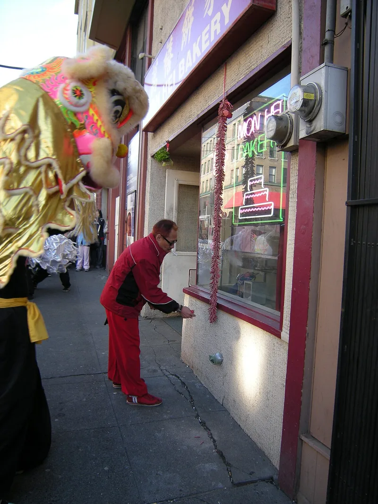
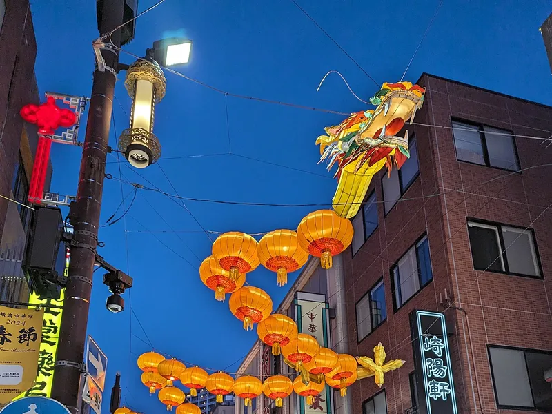

Festival Guide
Chinese New Year Taboos: What Not to Do, and Why
Chinese New Year comes with a list of things many families try not to do, especially on the first day: no sweeping, no haircuts, no broken dishes, no talk of death. Here are the best-known taboos, the reasons tradition gives for them, and what families do before the new year instead. Lunar New Year 2027 falls on Saturday 6 February.
Why Chinese New Year has taboos
Many of the taboos share one idea: what happens at the start of the year is said to repeat all year long. Take medicine on New Year's Day, one belief goes, and you will be ill for the whole year. During the festival, a guide from the Confucius Institute for Scotland says, people are “extremely cautious about their words and deeds”.
Many of the reasons are plays on words. Chinese has many words that sound alike, so an ordinary action can echo an unlucky word, or a lucky one. The word for hair, fa, sounds like the fa in facai, “to become wealthy”, so washing your hair on New Year's Day is said to wash your fortune away.
These are folk beliefs, not rules. Taboos “may be different between families, depending on how superstitious they are”, SBS notes, and Free Malaysia Today points out that some are only observed in a few households today.

The taboos at a glance
The table sums up the most common taboos and the traditional reason given for each. The sections below explain them.
| Taboo | When | Traditional reason |
|---|---|---|
| Sweeping or taking out rubbish | New Year's Day | It would sweep away wealth and throw out good fortune |
| Washing your hair | New Year's Day | Hair (fa) sounds like fa in facai, “to become wealthy” |
| Washing clothes | First and second days | They are said to be the birthday of the Water God |
| Cutting hair | At New Year | Said to bring misfortune to your uncles |
| Using scissors and knives | New Year's Day | Scissors invite quarrels; an accident could draw blood, which is unlucky |
| Breaking dishes or mirrors | During the festival | A sign of bad fortune, lost money or a family breaking up |
| Unlucky words | During the festival | Death, illness or poverty could follow you all year |
| Lending money or chasing debts | New Year's Day | Said to bring bad luck for the rest of the year |
| Children crying | During the festival | Believed to bring bad luck to the family |
| Wearing black or white | During the festival | Traditionally the colours of mourning |
| Taking medicine | New Year's Day | You would be ill for the whole year |
| Giving a clock, cutting pears | At New Year | “Giving a clock” sounds like a funeral rite; pear sounds like “separation” |
Sweeping, rubbish and washing
The best-known taboo is about cleaning. On New Year's Day, many families do not sweep the floor or take out the rubbish, because sweeping is linked to sweeping wealth away and taking out rubbish to throwing out good fortune. Wikipedia notes that brooms and dustpans are put away on the first day “so that the newly arrived good luck cannot be swept away.”
The pause is short. SBS says cleaning can go back to normal after New Year's Day. In the custom described by the Confucius Institute's guide, sweeping returns on the fifth day, when dust and rubbish, now seen as symbols of poverty, are swept out of the house.
Water is handled with care too. The first and second days are said to be the birthday of the Water God, so some families do not wash clothes on those days; water also stands for wealth, China Highlights explains, so pouring it away is seen as losing money. Many people also skip washing their hair on New Year's Day, because of the fa and facai pun.
Haircuts, knives and broken dishes
Hair is cut before the festival, not during it. Cutting hair at New Year is said to bring misfortune to your uncles, and Wikipedia says any haircuts should be finished before the new year. China Highlights adds that a haircut or new hairstyle before the festival is increasingly popular.
Sharp tools are put aside on New Year's Day. The blades of scissors are said to look like lips when people quarrel, so using them invites quarrels, and an accident with a knife could draw blood, which is seen as unlucky. Because using knives and lighting fires are taboo on the first day, Wikipedia notes, food is often cooked in advance.
Breaking a bowl, plate, glass, vase or mirror is said to signal bad fortune, lost money or even a family breaking up. Accidents happen, so tradition has a remedy: wrap the pieces in red paper and say “sui sui ping'an”, which means “safe and sound all year round”. The word for broken, sui, sounds like the word for year, sui, so the accident becomes a good wish.
Words, numbers and gifts
What you say matters as much as what you do. Words linked to death, illness, poverty or ghosts are avoided, because saying them is believed to make them follow you all year. If such topics come up, people use gentler words, such as “somebody is gone” instead of “somebody died”.
Numbers follow the same logic. The number 4 is especially unlucky because it sounds like the word for death, so amounts of 4 and 40 are avoided in red envelopes, which are given in even amounts because good things come in pairs.
Some gifts are avoided for the same reason. In Chinese, “giving a clock” sounds like “attending a funeral ritual”, SBS explains, and the word for pear sounds like “separation”, so cutting pears is avoided. Wikipedia adds that shoes are avoided because their name sounds like “rough”, as in a rough year.
Money, tears and colours
Money matters are settled before the year turns. Tradition says money should not be lent on New Year's Day, that all debts should be paid by New Year's Eve, and that anyone who goes to a debtor's home to demand payment will be unlucky all year. Wikipedia notes that businesses are expected to pay off all the year's debts before New Year's Eve.
Families also try to keep the mood happy. The crying of a child is believed to bring bad luck to the family, so parents do their best to stop tears, and SBS says parents are expected to stay calm and not punish their children. The Confucius Institute's guide adds that a child who is scolded at New Year “will need to be scolded for the whole year”.
Clothes send a message too. Black and white are traditionally associated with mourning, so they are avoided; red is the lucky colour, and SBS suggests bright colours such as red, yellow and green. Torn or damaged clothes are avoided as well.
What families do before New Year instead
Many taboos are easy to keep because the work is done in advance. The days before the festival are busy:
- Cleaning the house. Traditionally every family cleans thoroughly, symbolically sweeping away ill fortune to make way for good luck. SBS says families usually finish before New Year's Eve.
- Haircuts. Done before the new year, so no one needs scissors during the festival.
- Paying debts. Everything owed is settled by New Year's Eve.
- Cooking ahead. Food is prepared in advance, so knives and fires can rest on the first day.
- Filling the rice jar. On New Year's Eve the rice jar should be full, so the family will not go hungry, the Confucius Institute's guide says.
In Cambodia, families of Chinese descent keep the same rhythm: before the festival they “always clean and decorate their houses”, historian Diep Sophal told Xinhua in 2023. Our Lunar New Year guide describes how Cambodia celebrates.
The 2027 calendar, and a respectful note
For Lunar New Year 2027, New Year's Eve, the day to finish cleaning and settle debts, is Friday 5 February 2027. New Year's Day, the focus of many of these taboos, is Saturday 6 February. Married daughters traditionally visit their parents on the second day, Sunday 7 February, rather than on New Year's Day. The celebrations end with the Lantern Festival on the 15th day, Saturday 20 February 2027.
Customs vary from family to family and from region to region. Some households keep many taboos, others only a few, and most people know that such beliefs are “not scientific”, as the Confucius Institute's guide puts it. They are traditions, not rules: if you visit a family at New Year, simply follow their lead.

Frequently asked questions
Why can't you sweep on Chinese New Year?
Tradition says sweeping on New Year's Day would sweep away the wealth and good luck that have just arrived, so brooms are put away for the first day. Families clean the house thoroughly before the new year instead.
Can you wash your hair on Chinese New Year?
Many people avoid it on New Year's Day. The word for hair, fa, sounds like the fa in facai, “to become wealthy”, so washing your hair is said to wash your fortune away.
What colours should you not wear at Chinese New Year?
Black and white, which are traditionally associated with mourning. Red is the traditional lucky colour, and bright colours are welcome.
What if you break something at Chinese New Year?
Tradition offers a remedy: wrap the pieces in red paper and say “sui sui ping'an”, “safe and sound all year round”. The word for broken, sui, sounds like the word for year.
When is Chinese New Year 2027?
Saturday 6 February 2027. New Year's Eve, when the cleaning, haircuts and debts should be done, is Friday 5 February 2027.
Do all families follow these taboos?
No. Customs vary between families and regions, and many households keep only some of them. They are folk traditions, not rules.
Sources and further reading
- Wikipedia: “Chinese New Year” — cleaning before the new year, brooms and dustpans put away on the first day, haircuts finished before the new year, knives and fires on the first day, the number 4, the shoe sound-alike and businesses paying debts before New Year's Eve.
- China Highlights: “Chinese New Year Taboos and Superstitions: 18 Things You Should Not Do” — the taboos on medicine, sweeping, unlucky words, hair, washing clothes, scissors and knives, red envelope amounts, breaking things and “sui sui ping'an”, lending money, crying, damaged clothes and black or white clothes, and married daughters visiting on the second day.
- SBS: “6 taboos that you need to avoid during Lunar New Year” (Jojo Lee, 23 January 2020) — cleaning before New Year's Eve, sweeping again after New Year's Day, clocks and pears, crying, black and white clothes, and taboos differing between families.
- Confucius Institute for Scotland: “Taboos During Chinese New Year” — people being cautious about words and deeds, unlucky words, scolding children, sweeping on the fifth day, the full rice jar, and taboos as beliefs that are not scientific.
- Free Malaysia Today: “10 taboos you should always observe during Chinese New Year” (Noel Wong, 11 February 2021) — the fa and facai sound-alike, the Water God's birthday, debts settled by New Year's Eve, and some taboos being kept in only a few households today.
- Cambodianess (Xinhua): “Chinese Lunar New Year widely celebrated in Cambodia” (20 January 2023) — Diep Sophal on families of Chinese descent in Cambodia cleaning and decorating their houses before the festival.
These taboos are folk traditions that vary between families and regions, shared here for culture rather than as rules, and the photos come from Wikimedia Commons under the free licences named under each picture.
Explore more: Lunar New Year guide · Chinese New Year 2027 · Goat horoscope 2027 · Lucky days to open a business
← Back to the MyBirthSign Blogមគ្គុទ្ទេសក៍ពិធីបុណ្យ
ការហាមប្រាមពេលចូលឆ្នាំចិន៖ អ្វីដែលមិនគួរធ្វើ និងមូលហេតុ
បុណ្យចូលឆ្នាំចិន មកជាមួយបញ្ជីនៃអ្វីៗដែលគ្រួសារជាច្រើនព្យាយាមមិនធ្វើ ជាពិសេសនៅថ្ងៃដំបូង៖ មិនបោសផ្ទះ មិនកាត់សក់ មិនធ្វើបែកចាន មិននិយាយពីសេចក្ដីស្លាប់។ ខាងក្រោមនេះជាការហាមប្រាមដែលគេស្គាល់ច្រើនជាងគេ មូលហេតុដែលប្រពៃណីផ្ដល់ឲ្យ និងអ្វីដែលគ្រួសារនានាធ្វើមុនចូលឆ្នាំថ្មីជំនួសវិញ។ ចូលឆ្នាំចិនឆ្នាំ 2027 ធ្លាក់នៅថ្ងៃសៅរ៍ 06/02/2027។
ហេតុអ្វីបានជាចូលឆ្នាំចិនមានការហាមប្រាម
ការហាមប្រាមជាច្រើនមានគំនិតរួមមួយ៖ អ្វីដែលកើតឡើងនៅដើមឆ្នាំ ត្រូវបានគេជឿថានឹងកើតឡើងដដែលៗពេញមួយឆ្នាំ។ ជំនឿមួយនិយាយថា បើលេបថ្នាំនៅថ្ងៃចូលឆ្នាំ អ្នកនឹងឈឺពេញមួយឆ្នាំ។ មគ្គុទ្ទេសក៍មួយរបស់វិទ្យាស្ថានខុងជឺសម្រាប់ស្កុតឡែន (Confucius Institute for Scotland) និយាយថា ក្នុងអំឡុងបុណ្យ មនុស្ស «ប្រុងប្រយ័ត្នខ្លាំងណាស់ចំពោះពាក្យសម្ដី និងទង្វើរបស់ខ្លួន»។
មូលហេតុជាច្រើន គឺជាការលេងពាក្យ។ ភាសាចិនមានពាក្យជាច្រើនដែលបញ្ចេញសំឡេងស្រដៀងគ្នា ដូច្នេះសកម្មភាពធម្មតាមួយ អាចរំលឹកដល់ពាក្យអាក្រក់ ឬពាក្យល្អ។ ពាក្យសម្រាប់ «សក់» គឺ fa ដែលបញ្ចេញសំឡេងដូច fa ក្នុងពាក្យ facai មានន័យថា «ក្លាយជាអ្នកមាន» ដូច្នេះការកក់សក់នៅថ្ងៃចូលឆ្នាំ ត្រូវបានគេនិយាយថាជាការលាងសំណាងរបស់អ្នកចោល។
ទាំងនេះជាជំនឿប្រជាប្រិយ មិនមែនជាច្បាប់ទេ។ SBS កត់សម្គាល់ថា ការហាមប្រាម «អាចខុសគ្នាពីគ្រួសារមួយទៅគ្រួសារមួយ អាស្រ័យលើកម្រិតជំនឿរបស់ពួកគេ» ហើយ Free Malaysia Today បញ្ជាក់ថា សព្វថ្ងៃនេះ ការហាមប្រាមខ្លះត្រូវបានគោរពតែក្នុងគ្រួសារមួយចំនួនតូចប៉ុណ្ណោះ។
ការហាមប្រាមសង្ខេប
តារាងខាងក្រោម សង្ខេបការហាមប្រាមដែលគេជួបញឹកញាប់ជាងគេ និងមូលហេតុតាមប្រពៃណីសម្រាប់ការហាមប្រាមនីមួយៗ។ ផ្នែកបន្ទាប់ៗពន្យល់លម្អិត។
| ការហាមប្រាម | ពេលណា | មូលហេតុតាមប្រពៃណី |
|---|---|---|
| បោសផ្ទះ ឬយកសំរាមចោល | ថ្ងៃចូលឆ្នាំ | វានឹងបោសទ្រព្យសម្បត្តិចោល និងបោះសំណាងល្អចោល |
| កក់សក់ | ថ្ងៃចូលឆ្នាំ | «សក់» (fa) បញ្ចេញសំឡេងដូច fa ក្នុង facai «ក្លាយជាអ្នកមាន» |
| បោកខោអាវ | ថ្ងៃទីមួយ និងថ្ងៃទីពីរ | គេនិយាយថា ជាថ្ងៃខួបកំណើតរបស់ទេពនៃទឹក |
| កាត់សក់ | ពេលចូលឆ្នាំ | គេនិយាយថា នាំសំណាងអាក្រក់ដល់ពូមារបស់អ្នក |
| ប្រើកន្ត្រៃ និងកាំបិត | ថ្ងៃចូលឆ្នាំ | កន្ត្រៃនាំឲ្យឈ្លោះគ្នា គ្រោះថ្នាក់អាចធ្វើឲ្យហូរឈាម ដែលជាសំណាងអាក្រក់ |
| ធ្វើបែកចាន ឬកញ្ចក់ | ក្នុងអំឡុងបុណ្យ | សញ្ញានៃសំណាងអាក្រក់ ការបាត់បង់ប្រាក់ ឬការបែកបាក់គ្រួសារ |
| ពាក្យអាក្រក់ | ក្នុងអំឡុងបុណ្យ | សេចក្ដីស្លាប់ ជំងឺ ឬភាពក្រីក្រ អាចតាមអ្នកពេញមួយឆ្នាំ |
| ឲ្យខ្ចីលុយ ឬទារបំណុល | ថ្ងៃចូលឆ្នាំ | គេនិយាយថា នាំសំណាងអាក្រក់ពេញមួយឆ្នាំដែលនៅសល់ |
| ក្មេងយំ | ក្នុងអំឡុងបុណ្យ | គេជឿថា នាំសំណាងអាក្រក់ដល់គ្រួសារ |
| ស្លៀកពាក់ពណ៌ខ្មៅ ឬស | ក្នុងអំឡុងបុណ្យ | តាមប្រពៃណី ជាពណ៌នៃការកាន់ទុក្ខ |
| លេបថ្នាំ | ថ្ងៃចូលឆ្នាំ | អ្នកនឹងឈឺពេញមួយឆ្នាំ |
| ជូននាឡិកា កាត់ផ្លែសារី | ពេលចូលឆ្នាំ | «ជូននាឡិកា» ស្ដាប់ទៅដូចពិធីបុណ្យសព ពាក្យ «សារី» ស្ដាប់ទៅដូច «ការបែកគ្នា» |
ការបោសផ្ទះ សំរាម និងការលាងសម្អាត
ការហាមប្រាមដែលគេស្គាល់ច្រើនជាងគេ គឺទាក់ទងនឹងការសម្អាត។ នៅថ្ងៃចូលឆ្នាំ គ្រួសារជាច្រើនមិនបោសផ្ទះ ឬយកសំរាមចោលទេ ព្រោះការបោសផ្ទះត្រូវបានភ្ជាប់នឹងការបោសទ្រព្យសម្បត្តិចោល ហើយការយកសំរាមចោល ត្រូវបានភ្ជាប់នឹងការបោះសំណាងល្អចោល។ Wikipedia កត់សម្គាល់ថា អំបោស និងប្រដាប់ចូកសំរាម ត្រូវបានទុកមួយឡែកនៅថ្ងៃដំបូង «ដើម្បីកុំឲ្យសំណាងល្អដែលទើបមកដល់ ត្រូវគេបោសចោល»។
ការផ្អាកនេះមានរយៈពេលខ្លី។ SBS និយាយថា ការសម្អាតអាចធ្វើធម្មតាវិញ បន្ទាប់ពីថ្ងៃចូលឆ្នាំ។ តាមទំនៀមដែលមគ្គុទ្ទេសក៍របស់វិទ្យាស្ថានខុងជឺពិពណ៌នា ការបោសផ្ទះត្រឡប់មកវិញនៅថ្ងៃទីប្រាំ ពេលដែលធូលី និងសំរាម ដែលពេលនោះត្រូវបានចាត់ទុកជានិមិត្តរូបនៃភាពក្រីក្រ ត្រូវបានបោសចេញពីផ្ទះ។
ទឹកក៏ត្រូវប្រើដោយប្រុងប្រយ័ត្នដែរ។ ថ្ងៃទីមួយ និងថ្ងៃទីពីរ ត្រូវបានគេនិយាយថាជាថ្ងៃខួបកំណើតរបស់ទេពនៃទឹក ដូច្នេះគ្រួសារខ្លះមិនបោកខោអាវនៅថ្ងៃទាំងនោះទេ។ China Highlights ពន្យល់ថា ទឹកក៏តំណាងឲ្យទ្រព្យសម្បត្តិដែរ ដូច្នេះការចាក់ទឹកចោល ត្រូវបានចាត់ទុកថាជាការបាត់បង់ប្រាក់។ មនុស្សជាច្រើនក៏មិនកក់សក់នៅថ្ងៃចូលឆ្នាំដែរ ដោយសារការលេងពាក្យ fa និង facai។
ការកាត់សក់ កាំបិត និងចានបែក
គេកាត់សក់មុនបុណ្យ មិនមែនក្នុងអំឡុងបុណ្យទេ។ ការកាត់សក់ពេលចូលឆ្នាំ ត្រូវបានគេនិយាយថានាំសំណាងអាក្រក់ដល់ពូមារបស់អ្នក ហើយ Wikipedia និយាយថា ការកាត់សក់ទាំងអស់គួរធ្វើឲ្យរួចមុនឆ្នាំថ្មី។ China Highlights បន្ថែមថា ការកាត់សក់ ឬប្ដូរម៉ូដសក់ថ្មីមុនបុណ្យ កាន់តែពេញនិយមឡើងៗ។
ឧបករណ៍មុតស្រួច ត្រូវបានទុកមួយឡែកនៅថ្ងៃចូលឆ្នាំ។ គេនិយាយថា មុខកន្ត្រៃមើលទៅដូចបបូរមាត់ពេលមនុស្សឈ្លោះគ្នា ដូច្នេះការប្រើកន្ត្រៃនាំឲ្យមានការឈ្លោះប្រកែក ហើយគ្រោះថ្នាក់ដោយកាំបិត អាចធ្វើឲ្យហូរឈាម ដែលត្រូវបានចាត់ទុកថាជាសំណាងអាក្រក់។ Wikipedia កត់សម្គាល់ថា ដោយសារការប្រើកាំបិត និងការបង្កាត់ភ្លើង ជាការហាមប្រាមនៅថ្ងៃដំបូង គេតែងចម្អិនម្ហូបទុកជាមុន។
ការធ្វើបែកចានគោម ចាន កែវ ថូផ្កា ឬកញ្ចក់ ត្រូវបានគេនិយាយថាជាសញ្ញានៃសំណាងអាក្រក់ ការបាត់បង់ប្រាក់ ឬសូម្បីតែការបែកបាក់គ្រួសារ។ គ្រោះថ្នាក់តែងតែកើតមាន ដូច្នេះប្រពៃណីមានដំណោះស្រាយ៖ ខ្ចប់បំណែកដោយក្រដាសក្រហម ហើយនិយាយថា «sui sui ping'an» ដែលមានន័យថា «សុខសាន្តពេញមួយឆ្នាំ»។ ពាក្យសម្រាប់ «បែក» គឺ sui បញ្ចេញសំឡេងដូចពាក្យសម្រាប់ «ឆ្នាំ» គឺ sui ដូច្នេះគ្រោះថ្នាក់ក្លាយទៅជាពាក្យជូនពរល្អ។
ពាក្យសម្ដី លេខ និងកាដូ
អ្វីដែលអ្នកនិយាយ សំខាន់ដូចអ្វីដែលអ្នកធ្វើដែរ។ ពាក្យទាក់ទងនឹងសេចក្ដីស្លាប់ ជំងឺ ភាពក្រីក្រ ឬខ្មោច ត្រូវបានជៀសវាង ព្រោះគេជឿថាការនិយាយពាក្យទាំងនោះ នឹងធ្វើឲ្យរឿងទាំងនោះតាមអ្នកពេញមួយឆ្នាំ។ បើចាំបាច់និយាយពីរឿងបែបនេះ គេប្រើពាក្យទន់ភ្លន់ជាង ដូចជា «គាត់បានចាកចេញហើយ» ជំនួសឲ្យ «គាត់ស្លាប់ហើយ»។
លេខក៏ដូចគ្នាដែរ។ លេខ 4 ជាលេខអាក្រក់ជាពិសេស ព្រោះវាបញ្ចេញសំឡេងដូចពាក្យ «ស្លាប់» ដូច្នេះចំនួនប្រាក់ 4 និង 40 ត្រូវបានជៀសវាងក្នុងអាំងប៉ាវ ដែលគេដាក់ជាចំនួនគូ ព្រោះរឿងល្អតែងមកជាគូ។
កាដូខ្លះក៏ត្រូវបានជៀសវាងដោយហេតុផលដូចគ្នា។ SBS ពន្យល់ថា ក្នុងភាសាចិន ពាក្យ «ជូននាឡិកា» ស្ដាប់ទៅដូច «ចូលរួមពិធីបុណ្យសព» ហើយពាក្យសម្រាប់ផ្លែសារី ស្ដាប់ទៅដូច «ការបែកគ្នា» ដូច្នេះគេជៀសវាងការកាត់ផ្លែសារី។ Wikipedia បន្ថែមថា ស្បែកជើងត្រូវបានជៀសវាង ព្រោះឈ្មោះរបស់វាស្ដាប់ទៅដូច «លំបាក» ដូចក្នុងពាក្យ ឆ្នាំដ៏លំបាក។
លុយកាក់ ទឹកភ្នែក និងពណ៌
រឿងលុយកាក់ ត្រូវដោះស្រាយឲ្យរួចមុនឆ្នាំប្ដូរ។ ប្រពៃណីនិយាយថា មិនគួរឲ្យគេខ្ចីលុយនៅថ្ងៃចូលឆ្នាំទេ បំណុលទាំងអស់គួរសងឲ្យរួចត្រឹមយប់ចូលឆ្នាំ ហើយអ្នកណាដែលទៅផ្ទះកូនបំណុលដើម្បីទារប្រាក់ នឹងជួបសំណាងអាក្រក់ពេញមួយឆ្នាំ។ Wikipedia កត់សម្គាល់ថា អាជីវកម្មនានាត្រូវសងបំណុលទាំងអស់ប្រចាំឆ្នាំ មុនយប់ចូលឆ្នាំ។
គ្រួសារនានាក៏ព្យាយាមរក្សាបរិយាកាសឲ្យសប្បាយរីករាយដែរ។ គេជឿថាការយំរបស់ក្មេង នាំសំណាងអាក្រក់ដល់គ្រួសារ ដូច្នេះឪពុកម្ដាយខិតខំធ្វើយ៉ាងណាកុំឲ្យកូនយំ ហើយ SBS និយាយថា ឪពុកម្ដាយគួររក្សាភាពស្ងប់ស្ងាត់ និងមិនដាក់ទោសកូន។ មគ្គុទ្ទេសក៍របស់វិទ្យាស្ថានខុងជឺបន្ថែមថា ក្មេងដែលត្រូវគេស្ដីបន្ទោសពេលចូលឆ្នាំ «នឹងត្រូវគេស្ដីបន្ទោសពេញមួយឆ្នាំ»។
សំលៀកបំពាក់ក៏បង្ហាញអត្ថន័យដែរ។ តាមប្រពៃណី ពណ៌ខ្មៅ និងពណ៌ស ជាប់ទាក់ទងនឹងការកាន់ទុក្ខ ដូច្នេះគេជៀសវាង។ ពណ៌ក្រហមជាពណ៌សំណាង ហើយ SBS ណែនាំពណ៌ភ្លឺៗ ដូចជាក្រហម លឿង និងបៃតង។ សំលៀកបំពាក់រហែក ឬខូចខាត ក៏ត្រូវបានជៀសវាងដែរ។
អ្វីដែលគ្រួសារធ្វើមុនចូលឆ្នាំជំនួសវិញ
ការហាមប្រាមជាច្រើនងាយគោរពតាម ព្រោះការងារត្រូវបានធ្វើរួចជាមុន។ ថ្ងៃមុនបុណ្យជាថ្ងៃមមាញឹក៖
- សម្អាតផ្ទះ។ តាមប្រពៃណី គ្រួសារនីមួយៗសម្អាតផ្ទះយ៉ាងហ្មត់ចត់ ជានិមិត្តរូបនៃការបោសសំណាងអាក្រក់ចោល ដើម្បីទទួលសំណាងល្អ។ SBS និយាយថា ជាធម្មតា គ្រួសារនានាសម្អាតរួចមុនយប់ចូលឆ្នាំ។
- កាត់សក់។ ធ្វើរួចមុនឆ្នាំថ្មី ដូច្នេះគ្មាននរណាត្រូវការកន្ត្រៃក្នុងអំឡុងបុណ្យទេ។
- សងបំណុល។ អ្វីដែលជំពាក់ទាំងអស់ ត្រូវសងឲ្យរួចត្រឹមយប់ចូលឆ្នាំ។
- ចម្អិនម្ហូបទុកជាមុន។ ម្ហូបត្រូវបានរៀបចំទុកជាមុន ដូច្នេះកាំបិត និងភ្លើងអាចសម្រាកនៅថ្ងៃដំបូង។
- បំពេញពាងអង្ករ។ មគ្គុទ្ទេសក៍របស់វិទ្យាស្ថានខុងជឺនិយាយថា នៅយប់ចូលឆ្នាំ ពាងអង្ករគួរតែពេញ ដើម្បីកុំឲ្យគ្រួសារអត់បាយ។
នៅកម្ពុជា គ្រួសារដែលមានដើមកំណើតចិន ក៏ធ្វើតាមលំនាំដូចគ្នាដែរ៖ មុនបុណ្យ ពួកគេ «តែងតែសម្អាត និងតុបតែងផ្ទះរបស់ពួកគេ» នេះបើតាមសម្ដីរបស់អ្នកប្រវត្តិវិទូ លោក ឌៀប សុផល (Diep Sophal) ប្រាប់ទីភ្នាក់ងារព័ត៌មានស៊ិនហួ ក្នុងឆ្នាំ 2023។ មគ្គុទ្ទេសក៍ចូលឆ្នាំចិនរបស់យើង ពិពណ៌នាពីរបៀបដែលកម្ពុជាប្រារព្ធបុណ្យនេះ។
ប្រតិទិនឆ្នាំ 2027 និងការកត់សម្គាល់ដោយការគោរព
សម្រាប់ចូលឆ្នាំចិនឆ្នាំ 2027 យប់ចូលឆ្នាំ ដែលជាថ្ងៃត្រូវបញ្ចប់ការសម្អាត និងសងបំណុល គឺថ្ងៃសុក្រ 05/02/2027។ ថ្ងៃចូលឆ្នាំ ដែលជាចំណុចសំខាន់នៃការហាមប្រាមជាច្រើនខាងលើ គឺថ្ងៃសៅរ៍ 06/02/2027។ តាមប្រពៃណី កូនស្រីដែលរៀបការរួច ទៅលេងឪពុកម្ដាយនៅថ្ងៃទីពីរ គឺថ្ងៃអាទិត្យ 07/02/2027 ជាជាងនៅថ្ងៃចូលឆ្នាំ។ ការប្រារព្ធបុណ្យបញ្ចប់ដោយបុណ្យគោម នៅថ្ងៃទី 15 គឺថ្ងៃសៅរ៍ 20/02/2027។
ទំនៀមទម្លាប់ខុសគ្នាពីគ្រួសារមួយទៅគ្រួសារមួយ និងពីតំបន់មួយទៅតំបន់មួយ។ គ្រួសារខ្លះគោរពការហាមប្រាមច្រើន ខ្លះទៀតគោរពតែបន្តិចបន្តួច ហើយមនុស្សភាគច្រើនដឹងថា ជំនឿបែបនេះ «មិនមែនជាវិទ្យាសាស្ត្រ» ដូចដែលមគ្គុទ្ទេសក៍របស់វិទ្យាស្ថានខុងជឺបានលើកឡើង។ ទាំងនេះជាប្រពៃណី មិនមែនជាច្បាប់ទេ៖ បើអ្នកទៅលេងគ្រួសារណាមួយពេលចូលឆ្នាំ គ្រាន់តែធ្វើតាមពួកគេទៅបានហើយ។
សំណួរដែលគេសួរញឹកញាប់
ហេតុអ្វីមិនត្រូវបោសផ្ទះពេលចូលឆ្នាំចិន?
ប្រពៃណីនិយាយថា ការបោសផ្ទះនៅថ្ងៃចូលឆ្នាំ នឹងបោសទ្រព្យសម្បត្តិ និងសំណាងល្អដែលទើបតែមកដល់ចោល ដូច្នេះគេទុកអំបោសមួយឡែកនៅថ្ងៃដំបូង។ ផ្ទុយទៅវិញ គ្រួសារនានាសម្អាតផ្ទះយ៉ាងហ្មត់ចត់ មុនឆ្នាំថ្មី។
តើអាចកក់សក់ពេលចូលឆ្នាំចិនបានទេ?
មនុស្សជាច្រើនជៀសវាងការកក់សក់នៅថ្ងៃចូលឆ្នាំ។ ពាក្យសម្រាប់ «សក់» គឺ fa បញ្ចេញសំឡេងដូច fa ក្នុងពាក្យ facai «ក្លាយជាអ្នកមាន» ដូច្នេះការកក់សក់ ត្រូវបានគេនិយាយថាជាការលាងសំណាងរបស់អ្នកចោល។
តើមិនគួរស្លៀកពាក់ពណ៌អ្វីពេលចូលឆ្នាំចិន?
ពណ៌ខ្មៅ និងពណ៌ស ដែលតាមប្រពៃណី ជាប់ទាក់ទងនឹងការកាន់ទុក្ខ។ ពណ៌ក្រហមជាពណ៌សំណាងតាមប្រពៃណី ហើយពណ៌ភ្លឺៗក៏ល្អដែរ។
បើធ្វើបែកអ្វីមួយពេលចូលឆ្នាំចិន តើត្រូវធ្វើដូចម្ដេច?
ប្រពៃណីមានដំណោះស្រាយ៖ ខ្ចប់បំណែកដោយក្រដាសក្រហម ហើយនិយាយថា «sui sui ping'an» មានន័យថា «សុខសាន្តពេញមួយឆ្នាំ»។ ពាក្យសម្រាប់ «បែក» គឺ sui បញ្ចេញសំឡេងដូចពាក្យសម្រាប់ «ឆ្នាំ»។
តើចូលឆ្នាំចិនឆ្នាំ 2027 ត្រូវនឹងថ្ងៃណា?
ថ្ងៃសៅរ៍ 06/02/2027។ យប់ចូលឆ្នាំ ដែលជាថ្ងៃត្រូវសម្អាតផ្ទះ កាត់សក់ និងសងបំណុលឲ្យរួច គឺថ្ងៃសុក្រ 05/02/2027។
តើគ្រប់គ្រួសារធ្វើតាមការហាមប្រាមទាំងនេះឬទេ?
ទេ។ ទំនៀមទម្លាប់ខុសគ្នាតាមគ្រួសារ និងតំបន់ ហើយគ្រួសារជាច្រើនគោរពតែមួយចំនួនប៉ុណ្ណោះ។ ទាំងនេះជាប្រពៃណីប្រជាប្រិយ មិនមែនជាច្បាប់ទេ។
ប្រភព និងឯកសារអានបន្ថែម
- Wikipedia: “Chinese New Year” — ការសម្អាតផ្ទះមុនឆ្នាំថ្មី ការទុកអំបោស និងប្រដាប់ចូកសំរាមមួយឡែកនៅថ្ងៃដំបូង ការកាត់សក់ឲ្យរួចមុនឆ្នាំថ្មី កាំបិត និងភ្លើងនៅថ្ងៃដំបូង លេខ 4 ពាក្យស្រដៀងសំឡេងនៃស្បែកជើង និងអាជីវកម្មសងបំណុលមុនយប់ចូលឆ្នាំ។
- China Highlights: “Chinese New Year Taboos and Superstitions: 18 Things You Should Not Do” — ការហាមប្រាមលើការលេបថ្នាំ ការបោសផ្ទះ ពាក្យអាក្រក់ សក់ ការបោកខោអាវ កន្ត្រៃ និងកាំបិត ចំនួនប្រាក់ក្នុងអាំងប៉ាវ ការធ្វើបែករបស់ និង «sui sui ping'an» ការឲ្យខ្ចីលុយ ការយំ សំលៀកបំពាក់ខូចខាត និងពណ៌ខ្មៅ ឬស ព្រមទាំងកូនស្រីរៀបការរួច ទៅលេងឪពុកម្ដាយនៅថ្ងៃទីពីរ។
- SBS: “6 taboos that you need to avoid during Lunar New Year” (Jojo Lee, 23 January 2020) — ការសម្អាតមុនយប់ចូលឆ្នាំ ការបោសផ្ទះវិញបន្ទាប់ពីថ្ងៃចូលឆ្នាំ នាឡិកា និងផ្លែសារី ការយំ សំលៀកបំពាក់ពណ៌ខ្មៅ និងស និងការហាមប្រាមដែលខុសគ្នាតាមគ្រួសារ។
- Confucius Institute for Scotland: “Taboos During Chinese New Year” — មនុស្សប្រុងប្រយ័ត្នចំពោះពាក្យសម្ដី និងទង្វើ ពាក្យអាក្រក់ ការស្ដីបន្ទោសកូន ការបោសផ្ទះនៅថ្ងៃទីប្រាំ ពាងអង្ករពេញ និងការហាមប្រាម ជាជំនឿដែលមិនមែនជាវិទ្យាសាស្ត្រ។
- Free Malaysia Today: “10 taboos you should always observe during Chinese New Year” (Noel Wong, 11 February 2021) — ពាក្យស្រដៀងសំឡេង fa និង facai ថ្ងៃខួបកំណើតរបស់ទេពនៃទឹក បំណុលដែលត្រូវសងឲ្យរួចត្រឹមយប់ចូលឆ្នាំ និងការហាមប្រាមខ្លះ ដែលសព្វថ្ងៃគោរពតែក្នុងគ្រួសារមួយចំនួនតូច។
- Cambodianess (Xinhua): “Chinese Lunar New Year widely celebrated in Cambodia” (20 January 2023) — លោក ឌៀប សុផល (Diep Sophal) អំពីគ្រួសារដែលមានដើមកំណើតចិននៅកម្ពុជា សម្អាត និងតុបតែងផ្ទះមុនបុណ្យ។
ការហាមប្រាមទាំងនេះជាប្រពៃណីប្រជាប្រិយ ដែលខុសគ្នាតាមគ្រួសារ និងតំបន់ ហើយត្រូវបានចែករំលែកនៅទីនេះសម្រាប់ជាចំណេះដឹងវប្បធម៌ មិនមែនជាច្បាប់ទេ ចំណែករូបថតមកពី Wikimedia Commons ក្រោមអាជ្ញាប័ណ្ណសេរី ដែលបានបញ្ជាក់នៅក្រោមរូបភាពនីមួយៗ។
អានបន្ថែម៖ មគ្គុទ្ទេសក៍ចូលឆ្នាំចិន · ចូលឆ្នាំចិន 2027 · ជោគជតារាសីមមែ ឆ្នាំ 2027 · ថ្ងៃសំណាងសម្រាប់បើកអាជីវកម្ម
← ត្រឡប់ទៅប្លុក MyBirthSign